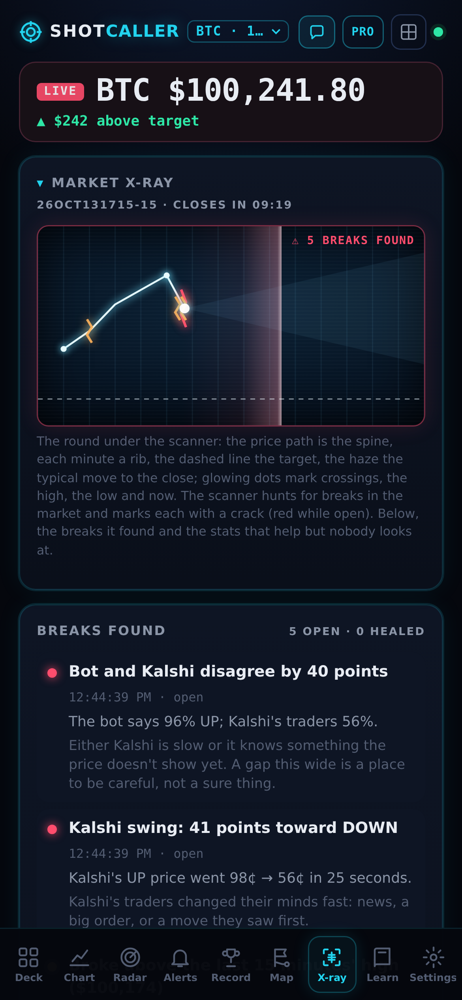
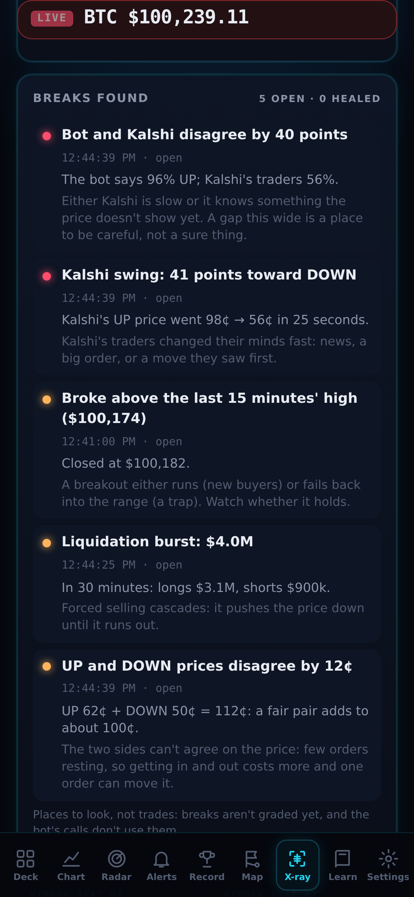
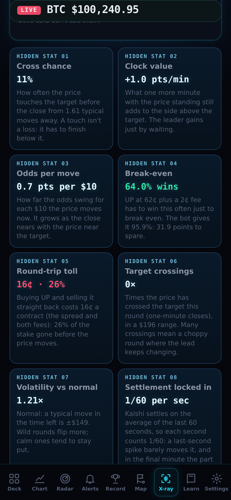
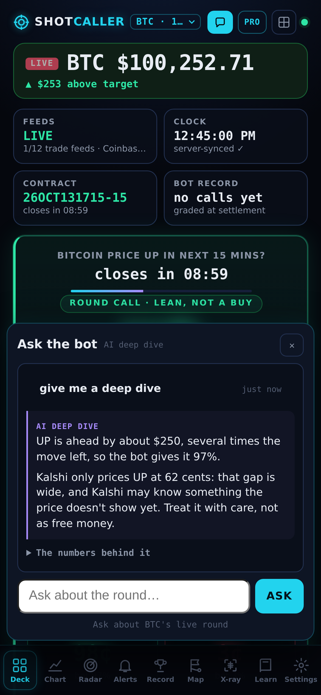
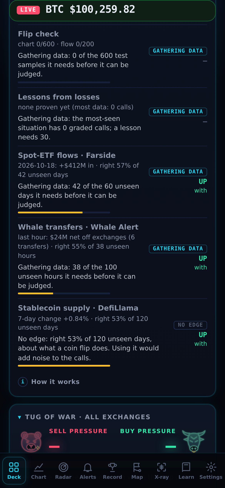

SHOTCALLER
What's new: an X-ray for every round.
v13.46 → v13.59
New · Market X-ray
The round,
under the scanner.
under the scanner.
The price path is the spine, each minute a rib, the target a dashed line. A scanner sweeps it, live.

New · break finder
It hunts for
breaks.
breaks.
Every 2 seconds: anywhere the market is out of line with itself.
High flip risk
Odds swings
Lead changes
UP/DOWN disagree
Bot vs Kalshi gap
Kalshi lagging
Jumps & spikes
Breakouts
Exchange splits
One-sided flow
Liquidation bursts
⚠ 5 BREAKS FOUND

New · hidden stats
The stats that help.
Nobody looks at.
Nobody looks at.

New · Ask the bot
Ask it
anything.
anything.
Type a question about the live round. Get a deep dive from the live numbers.

New · money flows
Follow
the money.
the money.
On probation until they're right on days they never saw. Each one says why.

New · the tune-up
Tune it up.
Whenever you want.
Whenever you want.
ShotCaller v13.59
Live now. Reopen the app to update.
Open Shot Caller
Signals, not guarantees: every call can lose. Breaks and hidden stats are context, not calls; money flows touch the calls only once proven. Not financial advice. Trade only what you can afford to lose. Screens show sample market data.